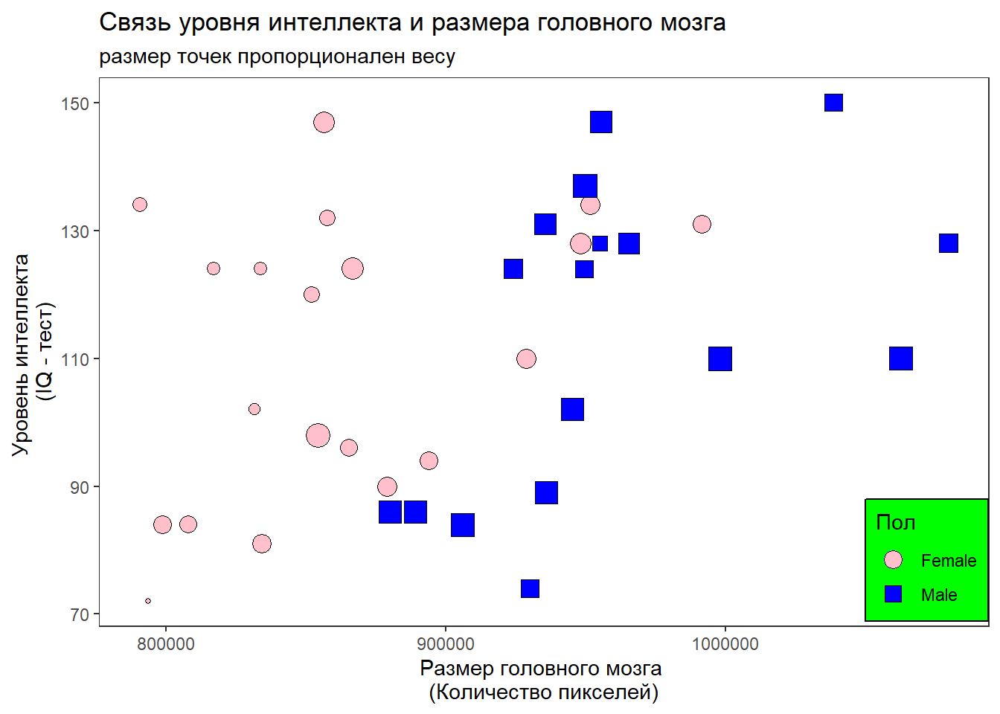
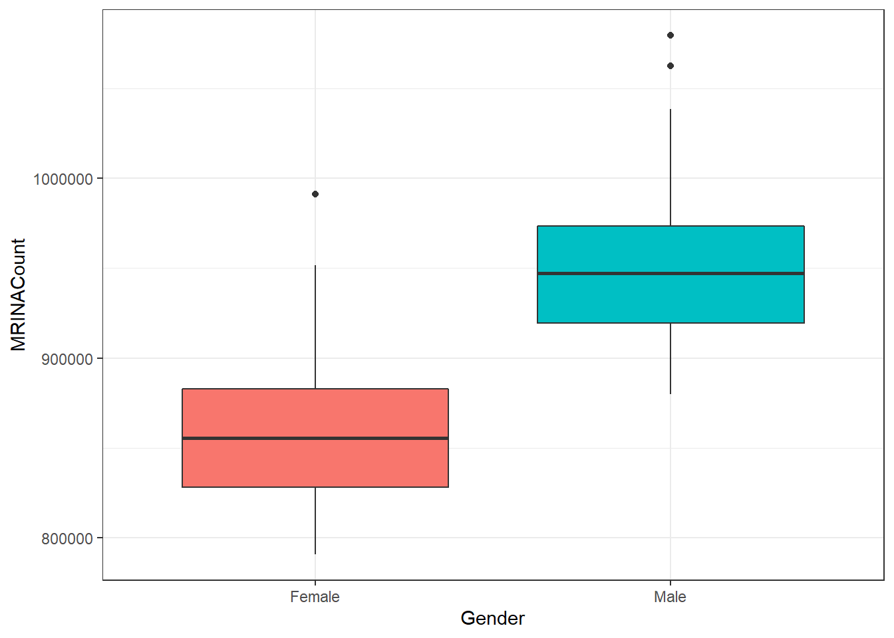

Мы попробуем изучить как связаны размеры головного мозга и уровень интеллекта человека.
В основе материала лежит датасет, представленный вот в этой таблице.
| Gender | PIQ | Weight | Height | MRINACount |
|---|---|---|---|---|
| Female | 124 | 118 | 64.5 | 816932 |
| Male | 124 | NA | 72.5 | 1001121 |
| Male | 150 | 143 | 73.3 | 1038437 |
| Male | 128 | 172 | 68.8 | 965353 |
| Female | 134 | 147 | 65.0 | 951545 |
| Female | 110 | 146 | 69.0 | 928799 |
| Female | 131 | 138 | 64.5 | 991305 |
| Female | 98 | 175 | 66.0 | 854258 |
| Male | 84 | 134 | 66.3 | 904858 |
| Male | 147 | 172 | 68.8 | 955466 |
| Female | 124 | 118 | 64.5 | 833868 |
| Male | 128 | 151 | 70.0 | 1079549 |
| Male | 124 | 155 | 69.0 | 924059 |
| Female | 147 | 155 | 70.5 | 856472 |
| Female | 90 | 146 | 66.0 | 878897 |
| Female | 96 | 135 | 68.0 | 865363 |
| Female | 120 | 127 | 68.5 | 852244 |
| Male | 102 | 178 | 73.5 | 945088 |
| Female | 84 | 136 | 66.3 | 808020 |
| Male | 86 | 180 | 70.0 | 889083 |
| Male | 86 | NA | NA | 892420 |
| Male | 84 | 186 | 76.5 | 905940 |
| Female | 134 | 122 | 62.0 | 790619 |
| Male | 128 | 132 | 68.0 | 955003 |
| Female | 102 | 114 | 63.0 | 831772 |
| Male | 131 | 171 | 72.0 | 935494 |
| Female | 84 | 140 | 68.0 | 798612 |
| Male | 110 | 187 | 77.0 | 1062462 |
| Female | 72 | 106 | 63.0 | 793549 |
| Female | 124 | 159 | 66.5 | 866662 |
| Female | 132 | 127 | 62.5 | 857782 |
| Male | 137 | 191 | 67.0 | 949589 |
| Male | 110 | 192 | 75.5 | 997925 |
| Male | 86 | 181 | 69.0 | 879987 |
| Female | 81 | 143 | 66.5 | 834344 |
| Female | 128 | 153 | 66.5 | 948066 |
| Male | 124 | 144 | 70.5 | 949395 |
| Female | 94 | 139 | 64.5 | 893983 |
| Male | 74 | 148 | 74.0 | 930016 |
| Male | 89 | 179 | 75.5 | 935863 |

Мы не наблюдаем связи между уровнем интеллекта и полом. Однако отчетливо прослеживается связь между полом и размером мозга. Эту закономерность иллюстрирует следующий график.
